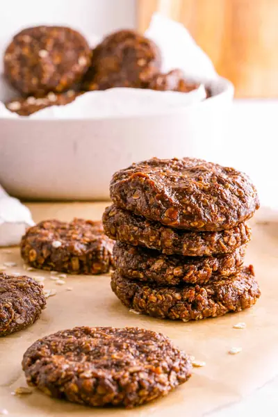

No-Bake Cookies without Peanut Butter

Ingredients
- ¼ cup coconut oil
- ¾ cup white sugar
- ¼ cup cocoa powder
- ½ cup almond milk
- 1 teaspoon vanilla extract
- ⅔ cup cashew butter (or almond butter)
- 2½ cups quick oats
- ½ cup desiccated coconut
- 1 pinch salt
Steps
- Place the coconut oil, white sugar, cocoa powder, cashew butter, and almond milk in a medium saucepan. Stir to combine.
- Bring it over the stove at medium heat and stir to melt the coconut oil and sugar. Stir with a spatula to combine the ingredients. Remove from heat. Add vanilla extract and combine.
- Add the desiccated coconut and quick oats. Stir to combine, make sure every oat is covered in the cookie batter.
- Next, prepare a large tray with parchment paper.
- With a cookie scoop, scoop out the cookies, roll the dough into a ball shape, and drop on the parchment paper. Spread into a cookie shape with the back of a spoon. Let the cookies cool for 30 minutes or until hardened. (Makes 20-22 cookies)
- Keep the cookies in the fridge in an airtight container for up to 1 week.
Recipe by Anjali Shah · The Picky Eater, from The Picky Eater. Saved here for personal use; the original has the full notes, tips and photos. Open original